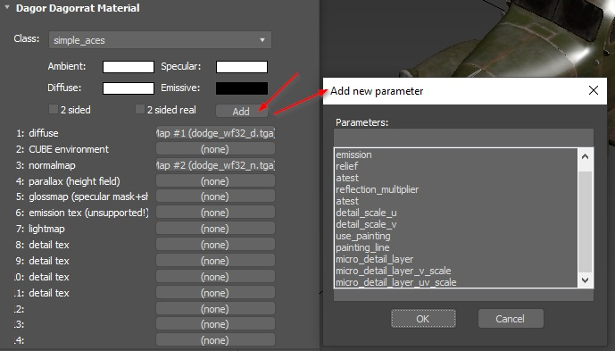

Shader: rendinst_simple / simple_aces
Overview
A basic shader used for objects that require a texture along with a normals, metalness, and smoothness map. It supports alpha test and microdetails.
Note
Technically, this is the rendinst_simple shader. However, it may be referred as “simple_aces” on old assets, but the game interprets both as rendinst_ simple.
{kind=link}
{kind=link}
Textures
The shader uses the first UV channel for mapping.
tex0: – Diffuse albedo map
tex2: – Texture combining normals, metalness, and smoothness:
RG – Normal map
B – Metalness
Alpha – Smoothness
{kind=link}
Parameters
{kind=link}
The shader is configured using the following parameters:
“2 sided” checkbox (“two_sided” in Asset Viewer) – The original, outdated method for double-sided geometry. It works imperfectly with shadows and is slightly more expensive with small triangle counts, but performs well and is cost-effective for large triangle counts. Currently, it’s only used for trees and not for environment assets (though older assets may still have it, as this was the only option previously).
“2 sided real” checkbox (“real_two_sided” in Asset Viewer) – The second method for double-sided geometry. It duplicates and flips the geometry where the material is applied (one triangle becomes two). This method works correctly with shadows but doubles the number of triangles to which the material is applied.
Important
Avoid overusing this parameter or duplicating existing materials just to apply it to parts of an asset. If a texture set is used and part of the geometry needs to be double-sided while another part remains single-sided, it’s more efficient to create a single material for the entire model with this texture set and handle the double-sided geometry by flipping it directly in the LODs. This approach is cheaper than using two nearly identical materials and provides the same visual result.
atest – Alpha channel cutoff threshold. A switch for transparency based on the diffuse’s alpha channel. The mask is compressed to a single bit: anything darker than
127becomes transparent, and the rest is opaque.Note
Although the atest parameter defaults to
127, it functions as a Boolean switch. If the value is greater than0, transparency is enabled; otherwise, it’s not used. The threshold cannot be adjusted.A smooth gradient from black to white will be cut off at the same point, regardless of whether atest is set to
1,255, or1000.use_painting – Controls painting from the palette defined in the shader variables of the scene.
1: Enable painting0: Disable paintingValues between
0.(0)1and0.(9): Apply partial painting (acts as a multiplier). Painting is applied based on the diffuse alpha channel multiplied by the use_painting value. Values from1.(0)1to1.(9)also influence the strength of the paint from0.0to1.0but disable the random pixel selection from the painting stripe when the object is offset in height. This ensures consistency in colors, for instance, when painting modular skyscrapers the same color. The palette used is namedpaint_colors.ddsand is located here:<project_name>/develop/assets/textures/colorize_textures.
See also
For more information, see Procedural Rendinst Painting.
painting_line – The painting stripe (from
0to the last stripe in the texture).micro_detail_layer – The index of the microdetail layer (from
0to11).See also
For more information, see Microdetails on Assets.
micro_detail_layer_v_scale – Vertical scale of the microdetail.
micro_detail_layer_uv_scale – UV scale of the microdetail texture. The larger the value, the smaller the detail pattern will appear (range:
0- infinity).